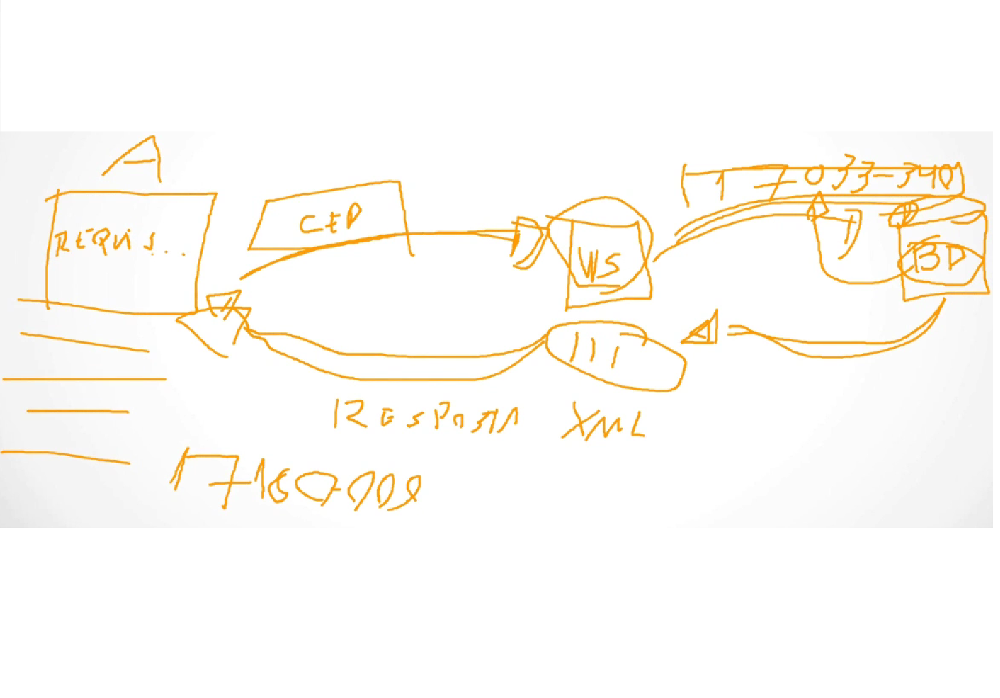

SOAP significa "Simple Object Access Protocol" e é um "protocolo de mensagens" (permite a comunicação entre sistemas) e surgiu porque era difícil fazer sistemas diferentes (como Windows e Linux) se comunicarem.
Para tal, o SOAP usou HTTP e XML para conectar qualquer sistema (mesmo com linguagens de programação diferentes).
Ao contrário do REST, que é um estilo arquitetural, o SOAP é rígido e a comunicação precisa seguir seus padrões para que possa ocorrer (XML rigoroso).
O XML é o conteúdo escrito (seguindo regras rígidas), enquanto o HTTP é usado por ele para levar a mensagem de um computador para outro. Entretanto, ele poderia usar SMTP (e-mail) ou FTP para essa transferência, o que é raríssimo, já que seriam necessárias configurações de rede complexas para portas específicas para os firewalls, em vez de apenas 80 (http - não criptografado) e 433 (https - criptografado).
Ainda assim, o SOAP conta com a WS-Security, assinando digitalmente e criptografando o XML (seja por HTTP/HTTPS, FTP ou SMTP).
Diferenças entre SOAP e REST:
SOAP aceita apenas XML como formato de mensagem, enquanto o REST suporta diversos formatos, como JSON, HTML e texto.
SOAP usa POST para tudo (em vez de GET, DELETE, POST e GET), já que sua ações estão descritas no XML, não na URL.
NO Node.js, o REST usa fetch() e axios.get(). Caso queira usar SOAP, é preciso instalar a biblioteca soap, carregar o WSDL e criar um cliente específico.
SOAP e REST são web services. Quando colocamos nosso CEP em um site de compras, por exemplo, estamos utilizando um web service para obter informações sobre o frete através de uma requisição ao banco de dados.

Lembrando: API é a interface que permite a comunicação entre diferentes softwares, enquanto web service é uma API específica para interação com sistemas distintos por meio da internet.